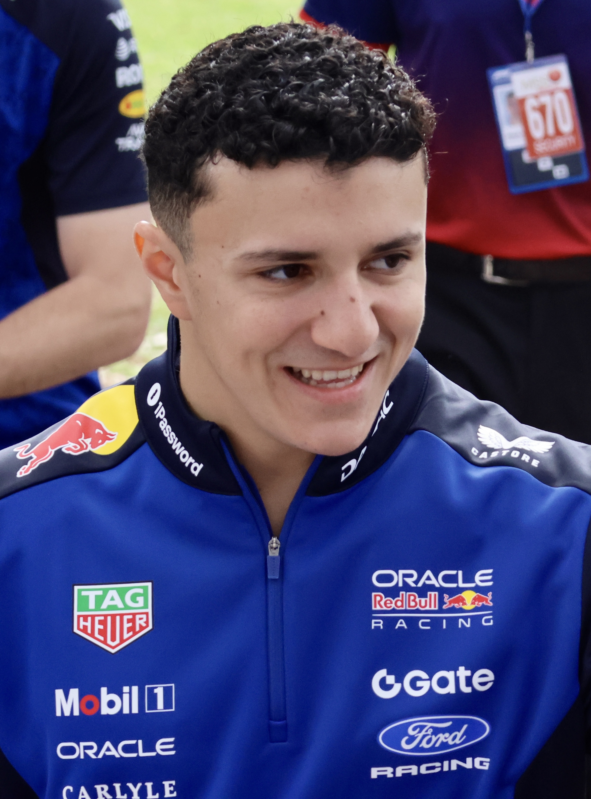
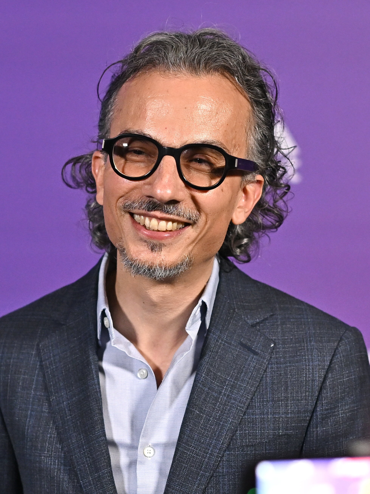
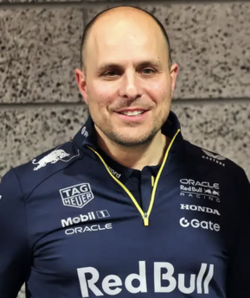
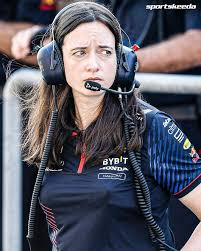

Key Figures of Red Bull Racing

Max Verstappen Driver
Max Verstappen is a four time Formula One World Champion who became F1's youngest driver at age 17 in 2015. He won on his Red Bull debut at the 2016 Spanish Grand Prix. After racking up 10 wins and 42 podiums in his first four seasons, he secured his first title in 2021. He followed with a record breaking 15 win season in 2022 and another dominant title in 2023 with 19 wins. Max claimed his fourth straight championship in 2024, then narrowly missed a fifth by just 2 points in a thrilling 2025 season finale.

Isack Hadjar Rising Star
Isack became a Red Bull Junior Driver in 2022 at age 17 and quickly impressed with 4 wins in Formula 3. In Formula 2, he delivered 4 feature race wins and took the title fight to the final round. His performances earned him a promotion to VCARB for the 2025 F1 season, where he claimed his first podium with 3rd place at the Dutch Grand Prix. Sharing that podium with Max Verstappen, Isack proved his potential and is set to join Oracle Red Bull Racing for the 2026 season.

Laurent Mekies Racing Director
Born in France in 1977, Laurent Mekies fell in love with racing at the 1988 French Grand Prix. He earned a Master's degree in mechanical engineering from ESTACA in Paris. After a trackside internship with the Signature team in French Formula 3, he moved to Asiatech. There, as an engine engineer, he got his first taste of Formula 1 in 2001, beginning a long and respected career at the highest level of motorsport.

GianPiero Lambiase Race Engineer
GianPiero Lambiase has worked as a trackside engineer in Formula 1 for 20 years. After graduating in Mechanical Engineering from University College London, he started as a data engineer for Jordan. Within five years he became a Race Engineer, working with several drivers including Sergio Pérez. At the end of 2014, he moved to Red Bull Racing, fulfilling his dream of helping a driver win a world championship.

Pierre PhD · Senior Technical
Pierre has been a member of our senior technical group since joining Red Bull Racing in 2013. He holds a PhD in fluid mechanics after studying at the Institut National Polytechnique De Lorraine in Nancy and Georgia Tech, Atlanta. His academics speciality was biomechanical engineering, studying the interaction between cells in the bloodstream. He liked motorsports, "but my passion was more the technical aspects of science and engineering." It was motorsport that won over, however, and in 2001 Michelin recruited Pierre to study the interaction between track surfaces and the rubber of its Formula One tyres. His interest was strictly at the molecular level but eventually he moved away from the microscope and took on more responsibility, becoming a project leader at Michelin, responsible for adherence and simulation for F1.

Hannah Strategy & Operations
In over 16 years with Red Bull Racing, Hannah has played a pivotal role from the Ops room to the pitwall, helping to deliver some of the Team's finest wins. Hannah's route to the top of the Team's strategy department began back in late 2009, when following a Master's Degree in Mechanical Engineering at Cambridge University she joined the Team on a student placement. Her ability was soon recognised and within a few months she had progressed into the role of Simulation and Modelling Engineer. After just 18 months, Hannah's skills proved better suited to her true calling: orchestrating race winning strategies and leading the team to victory from the heart of the operations room.
Honoring the drivers, engineers, and visionaries behind Red Bull Racing's dominance.